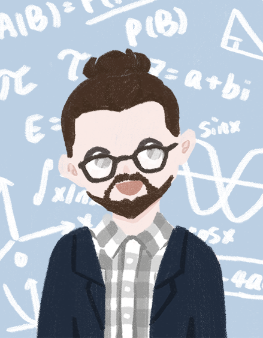

Welcome!
I’m Dr. Phil Chodrow, an assistant professor in the Department of Computer Science at Middlebury College. My pronouns are he/him/his.
Research
My research focuses on network science, the study of connected systems in society and nature. I draw on methods from applied mathematics, machine learning, statistics, and physics. I also work on data science projects to promote equity and sustainability. I have awesome collaborators.
Teaching
In Spring ’24 I am teaching CSCI 0451: Machine Learning and CSCI 0702: Senior Thesis.
I am on a mission. I teach other courses. Middlebury students might want to take a look at my FAQs.
News
| June 2024 |
I give an invited talk on network science education at the Conference on Network Science in Quebec City, Canada. I also speak in a contributed session on models of edge-correlated growing hypergraphs. |
| April 2024 |
I give an invited talk on modeling gender disparities in academic mathematics for the DISC Forum at Tufts University. |
| I give an invited (remote) seminar talk on models of gender disparity in professional mathematics at Toronto Metropolitan University. | |
| March 2024 |
New paper! Community detection in hypergraphs via mutual information maximization is now published in Scientific Reports. This is joint work with Jürgen Kritschgau, Daniel Kaiser, Oliver Alvarado Rodriguez, Ilya Amburg, Jessalyn Bolkema, Thomas Grubb, Fangfei Lan, Sepideh Maleki, and Bill Kay. This work was born at the 2022 AMS Mathematics Research Community on "Models and Methods for Sparse (Hyper)Network Science." |
| February 2024 |
In Spring '24, I am teaching CSCI 0451: Machine Learning and CSCI 0702: Senior Thesis. |
No matching items